СП 409.1325800.2018 «Трубопроводы магистральные и промысловые для нефти и газа.»
О документе: разработчики, утверждение, регистрация, ключевые слова
СВОД ПРАВИЛ
СП 409.1325800.2018
Издание официальное
1 ИСПОЛНИТЕЛЬ - ООО «Трансэнергострой»
- 2 ВНЕСЕН Техническим комитетом по стандартизации ТК 465 «Строительство»
- 3 ПОДГОТОВЛЕН к утверждению Департаментом градостроительной деятельности и архитектуры Министерства строительства и жилищнокоммунального хозяйства Российской Федерации (Минстрой России)
- 4 УТВЕРЖДЕН приказом Министерства строительства и жилищнокоммунального хозяйства Российской Федерации от 29 августа 2018 г. № 543/пр и введен в действие с 1 марта 2019 г.
- 5 ЗАРЕГИСТРИРОВАН Федеральным агентством по техническому регулированию и метрологии (Росстандарт)
В случае пересмотра (замены) или отмены настоящего свода правил соответствующее уведомление будет опубликовано в установленном порядке. Соответствующая информация, уведомление и тексты размещаются также в информационной системе общего пользования - на официальном сайте разработчика (Минстрой России) в сети Интернет
© Минстрой России, 2018
Настоящий нормативный документ не может быть полностью или частично воспроизведен, тиражирован и распространен в качестве официального издания на территории Российской Федерации без разрешения Минстроя России
Дата введения - 2019-03-01
УДК ОКС 91.100.60
Ключевые слова: изоляционные покрытия, тепловая изоляция, противокоррозионная изоляция, защита от коррозии
Руководитель организации-разработчика ООО «Трансэнергострой»
| Генеральный директор | _________________ | И.В. Вьюницкий | |
|---|---|---|---|
| Руководитель разработки | Генеральный директор | __________________ | И.В. Вьюницкий |
| Исполнитель | Начальник отдела экспертизы промышленной безопасности объектов ТЭК | __________________ личная подпись | А.В. Фомин |
| Исполнитель | Руководитель группы стандартизации отдела ЭПБ объектов ТЭК | __________________ | С.А. Артемьева |
| Исполнитель | Помощник генерального директора | личная подпись __________________ личная подпись | Д.З. Стерелюхина |
Введение
6 ВВЕДЕН ВПЕРВЫЕ
Настоящий свод правил разработан в соответствии с Федеральным законом от 29 декабря 2004 г. № 190-ФЗ «Градостроительный кодекс Российской Федерации», Федеральным законом от 30 декабря 2009 г. № 384-ФЗ «Технический регламент о безопасности зданий и сооружений», Федеральным законом от 23 ноября 2009 г. № 261-ФЗ «Об энергосбережении и повышении энергетической эффективности и о внесении изменений в отдельные законодательные акты Российской Федерации».
Настоящий свод правил разработан авторским коллективом ООО «Трансэнергострой» ( А.В. Фомин , канд. хим. наук И.В. Вьюницкий , канд. техн. наук И.С. Сивоконь , С.А. Артемьева , Д.З. Стерелюхина ), АО ВНИИСТ (канд. техн. наук В.Б. Ковалевский , канд. хим. наук И.В. Газуко , В.Ю. Антонов , В.И. Морозова ) .
1Область применения
- не выше 10 МПа - для магистральных трубопроводов;
- не выше 32 МПа - для промысловых трубопроводов.
2Нормативные ссылки
В настоящем своде правил использованы нормативные ссылки на следующие документы:
ГОСТ 9.008-82 Единая система защиты от коррозии и старения. Покрытия металлические и неметаллические неорганические. Термины и определения
Производство работ по устройству тепловой и противокоррозионной изоляции, контроль выполнения работ
Main and field pipelines for oil and gas Performance of works of anticorrosive and thermal insulation, control of works
ГОСТ 9.032-74 Единая система защиты от коррозии и старения. Покрытия лакокрасочные. Группы, технические требования и обозначения
ГОСТ 9.072-77 Единая система защиты от коррозии и старения. Покрытия лакокрасочные. Термины и определения
ГОСТ 9.304-87 Единая система защиты от коррозии и старения. Покрытия газотермические. Общие требования и методы контроля
ГОСТ 9.402-2004 Единая система защиты от коррозии и старения. Покрытия лакокрасочные. Подготовка металлических поверхностей к окрашиванию
ГОСТ 166-89 (ИСО 3599-76) Штангенциркули. Технические условия
ГОСТ 411-77 Резина и клей. Методы определения прочности связи с металлом при отслаивании
ГОСТ 427-75 Линейки измерительные металлические. Технические условия
ГОСТ 503-81 Лента холоднокатаная из низкоуглеродистой стали. Технические условия
ГОСТ 3282-74 Проволока стальная низкоуглеродистая общего назначения. Технические условия
ГОСТ 3560-73 Лента стальная упаковочная. Технические условия
ГОСТ 4640-2011 Вата минеральная. Технические условия
ГОСТ 5631-79 Лак БТ-577 и краска БТ-177. Технические условия
ГОСТ 6009-74 Лента стальная горячекатаная. Технические условия
ГОСТ 7076-99 Материалы и изделия строительные. Метод определения теплопроводности и термического сопротивления при стационарном тепловом режиме
ГОСТ 7338-90 Пластины резиновые и резинотканевые. Технические условия
ГОСТ 7502-98 Рулетки измерительные металлические. Технические условия
ГОСТ 8731-74 Трубы стальные бесшовные горячедеформированные. Технические требования
ГОСТ 8733-74 Трубы стальные бесшовные холоднодеформированные и теплодеформированные. Технические требования
ГОСТ 11262-80 Пластмассы. Метод испытания на растяжение
ГОСТ 11652-80 Винты самонарезающие с потайной головкой и заостренным концом для металла и пластмассы. Конструкция и размеры
ГОСТ 14918-80 Сталь тонколистовая оцинкованная с непрерывных линий. Технические условия
ГОСТ 15836-79 Мастика битумно-резиновая изоляционная. Технические условия
ГОСТ 16338-85 Полиэтилен низкого давления. Технические условия
ГОСТ 16504-81 Система государственных испытаний продукции. Испытания и контроль качества продукции. Основные термины и определения
ГОСТ 16523-97 Прокат тонколистовой из углеродистой стали качественной и обыкновенного качества общего назначения. Технические условия ГОСТ 17177-94 Материалы и изделия строительные теплоизоляционные. Методы испытаний ГОСТ 18599-2001 Трубы напорные из полиэтилена. Технические условия ГОСТ 19783-74 Паста кремнийорганическая теплопроводная. Технические условия ГОСТ 19904-90 Прокат листовой холоднокатаный. Сортамент ГОСТ 20295-85 Трубы стальные сварные для магистральных газонефтепроводов. Технические условия ГОСТ 21880-2011 Маты из минеральной ваты прошивные теплоизоляционные. Технические условия ГОСТ 23206-78 Пластмассы ячеистые жесткие. Метод испытания на сжатие ГОСТ 23208-2003 Цилиндры и полуцилиндры теплоизоляционные из минеральной ваты на синтетическом связующем. Технические условия ГОСТ 24297-2013 Верификация закупленной продукции. Организация проведения и методы контроля ГОСТ 26996-86 Полипропилен и сополимеры пропилена. Технические условия ГОСТ 27078-2014 Трубы из термопластов. Изменение длины. Метод определения и параметры ГОСТ 30244-94 Материалы строительные. Методы испытаний на горючесть ГОСТ 30256-94 Материалы и изделия строительные. Метод определения теплопроводности цилиндрическим зондом ГОСТ 30732-2006 Трубы и фасонные изделия стальные с тепловой изоляцией из пенополиуретана с защитной оболочкой. Технические условия ГОСТ 31149-2014 (ISO 2409:2013) Материалы лакокрасочные. Определение адгезии методом решетчатого надреза ГОСТ 31448-2012 Трубы стальные с защитными наружными покрытиями для магистральных газонефтепроводов. Технические условия ГОСТ 31993-2013 (ISO 2808:2007) Материалы лакокрасочные. Определение толщины покрытия ГОСТ 32528-2013 Трубы стальные бесшовные горячедеформированные. Технические условия ГОСТ 33228-2015 Трубы стальные сварные общего назначения. Технические условия газа. Промысловые трубопроводы. Механическая безопасность. Испытания на
ГОСТ 34068-2017 Система газоснабжения. Добыча прочность и проверка на герметичность
ГОСТ 34366-2017 Магистральный трубопроводный транспорт нефти и нефтепродуктов. Контроль качества строительно-монтажных работ. Основные положения
ГОСТ EN 1602-2011 Изделия теплоизоляционные, применяемые в строительстве. Метод определения кажущейся плотности
ГОСТ ISO 1167-1-2013 Трубы, соединительные детали и узлы соединений из термопластов для транспортирования жидких и газообразных сред. Определение стойкости к внутреннему давлению. Часть 1. Общий метод
ГОСТ Р 51164-98 Трубопроводы стальные магистральные. Общие требования к защите от коррозии
ГОСТ Р 51693-2000 Грунтовки антикоррозионные. Общие технические условия
ГОСТ Р 52246-2016 Прокат листовой горячеоцинкованный. Технические условия
ГОСТ Р 55436-2013 Системы газораспределительные. Покрытия из экструдированного полиэтилена для стальных труб. Общие технические требования
ГОСТ Р 57385-2017 Магистральный трубопроводный транспорт нефти и нефтепродуктов. Строительство магистральных нефтепроводов и нефтепродуктопроводов. Тепловая изоляция труб и соединительных деталей трубопроводов
ГОСТ Р ИСО 8501-1-2014 Подготовка стальной поверхности перед нанесением красок и относящихся к ним продуктов. Визуальная оценка чистоты поверхности. Часть 1. Степень окисления и степени подготовки непокрытой стальной поверхности и стальной поверхности после полного удаления прежних покрытий
СП 28.13330.2017 «СНиП 2.03.11-85 Защита строительных конструкций от коррозии»
СП 36.13330.2012 «СНиП 2.05.06-85* Магистральные трубопроводы» (с изменением № 1)
СП 48.13330.2011 «СНиП 12-01-2004 Организация строительства» (с изменением № 1)
СП 61.13330.2012 «СНиП 41-03-2003 Тепловая изоляция оборудования и трубопроводов» (с изменением № 1)
СП 72.13330.2016 «СНиП 3.04.03-85 Защита строительных конструкций и сооружений от коррозии»
СП 86.13330.2014 «СНиП III-42-80* Магистральные трубопроводы» (с изменениями № 1, № 2)
СП 125.13330.2012 «СНиП 2.05.13-90 Нефтепродуктопроводы, прокладываемые на территории городов и других населенных пунктов» (с изменением № 1)
СП 284.1325800.2016 Трубопроводы промысловые для нефти и газа. Правила проектирования и производства работ
Примечание - При пользовании настоящим сводом правил целесообразно проверить действие ссылочных документов в информационной системе общего пользования -на официальном сайте федерального органа исполнительной власти в сфере стандартизации в сети Интернет или по ежегодному информационному указателю «Национальные стандарты», который опубликован по состоянию на 1 января текущего года, и по выпускам ежемесячного информационного указателя «Национальные стандарты» за текущий год. Если заменен ссылочный документ, на который дана недатированная ссылка, то рекомендуется использовать действующую версию этого документа с учетом всех внесенных в данную версию изменений. Если заменен ссылочный документ, на который дана датированная ссылка, то рекомендуется использовать версию этого документа с указанным выше годом утверждения (принятия). Если после утверждения настоящего свода правил в ссылочный документ, на который дана датированная ссылка, внесено изменение, затрагивающее положение, на которое дана ссылка, то это положение рекомендуется применять без учета данного изменения. Если ссылочный документ отменен без замены, то положение, в котором дана ссылка на него, рекомендуется применять в части, не затрагивающей эту ссылку. Сведения о действии сводов правил целесообразно проверить в Федеральном информационном фонде стандартов.
3Термины и определения
В настоящем своде правил применены термины по ГОСТ 9.008, ГОСТ 9.072, ГОСТ 16504, ГОСТ 24297, ГОСТ Р 57385, СП 61.13330 и [1], а также следующие термины с соответствующими определениями:
- 3.1адгезия (прилипание)
- Процесс образования межмолекулярного взаимодействия между приведенными в контакт разнородными поверхностями. Примечание - Адгезия обуславливает склеивание твердых тел (субстратов) с помощью клеящего вещества (адгезива), а также связь защитного покрытия с основой (например, металлом).
- 3.2диэлектрическая сплошность покрытия
- Отсутствие электрического пробоя при воздействии на покрытие напряжения от высоковольтного источника постоянного тока.Источник: ГОСТ Р 55436-2013, пункт 3.3
- 3.3грунтовка
- Суспензия пигмента или смеси пигментов с наполнителями в пленкообразующем веществе, образующая после высыхания непрозрачную однородную пленку с хорошей адгезией к окрашиваемой поверхности и покрывным слоям и предназначенная для повышения защитных свойств систем покрытий.Источник: ГОСТ Р 51693-2000, пункт 3.1
- 3.4катодное отслаивание
- Процесс, приводящий к потере адгезии покрытия под действием катодной поляризации, при наличии жидкости (электролита) под покрытием.
- 3.5противокоррозионное (изоляционное) покрытие
- Покрытие, предназначенное для защиты поверхности от коррозионного воздействия окружающей среды, так же может являться частью теплоизоляционной системы трубопровода.
- 3.6гидроизоляционное покрытие
- Элемент конструкции, устанавливаемый по наружной поверхности тепловой изоляции для защиты от воздействия окружающей среды и механических повреждений.
- 3.7номинальный диаметр, DN
- Параметр, применяемый для трубопроводных систем в качестве характеристики присоединяемых частей арматуры. Примечание - Единицу измерения номинального диаметра DN в условных обозначениях на арматуре не указывают, при этом он приблизительно равен внутреннему диаметру присоединяемого трубопровода, выраженному в миллиметрах. Номинальный диаметр обозначается DN с числовым значением. Например, DN 1200 соответствует фактическому наружному диаметру трубы 1220 мм.Источник: ГОСТ 34068-2017, пункт 3.14
- 3.8отслоение покрытия
- Отделение покрытия от покрываемого металла.
- 3.9переходное сопротивление покрытия
- Удельное электрическое сопротивление, Ом, единицы поверхности, м² , покрытия.
- 3.10противопожарная вставка
- Вставка на трубопроводе с тепловой изоляцией, изготовленная из негорючих материалов - препятствие для распространения пламени.
- 3.11система кабельного обогрева
- Система, предназначенная для обогрева трубопровода теплом, выделяемым за счет протекания электрического тока по кабелю с определенным электрическим сопротивлением.
- 3.12термореактивное покрытие
- Покрытие на основе синтетических материалов, которое в результате отверждения переходит в неплавкие и нерастворимые структуры.
- 3.13линейная часть магистрального/промыслового трубопровода
- Составная часть магистрального/промыслового трубопровода, состоящего из трубопроводов (включая запорную и иную арматуру, переходы через естественные и искусственные препятствия), системы электрохимической защиты от коррозии, сооружений технологической связи, иных устройств и сооружений, предназначенная для транспортирования нефти, природного газа и продуктов их переработки.
4Сокращения
В настоящем своде правил применены следующие сокращения:
ЛКП - лакокрасочное покрытие;
НД - нормативный документ;
ПКП - противокоррозионное покрытие;
ППУ - пенополиуретан;
СДТ - соединительные детали трубопровода;
ТИ - тепловая изоляция;
ТК - теплоизоляционная конструкция;
ТМ - теплоизоляционный материал;
ТП - теплоизоляционное покрытие;
ТПИ - тепловая и противокоррозионная изоляция;
DN - номинальный диаметр трубопровода;
Rz - шероховатости поверхности, мкм;
Sa - параметр степени чистоты поверхности металла.
5Требования к тепловой и противокоррозионной изоляции
- скорлупы из ППУ с защитной оболочкой из оцинкованной стали или полимерной ленты;
- пенополистирол с защитной оболочкой из оцинкованной стали или полимерной ленты;
- пенокаучук с защитной оболочкой из оцинкованной стали;
- пеностекло - для противопожарных вставок.
- противокоррозионного покрытия;
- теплоизоляционного покрытия;
- гидроизоляционного покрытия;
- пароизоляционного покрытия (при температуре транспортируемой среды ниже 20 о С);
- армирующих и крепежных деталей и приспособлений (для сборных конструкций);
- системы кабельного обогрева или нагревательных элементов скинсистемы, или трубы с теплоспутником (при высокой вязкости нефти и пониженной температуре окружающей среды).
- 6 Требования к трубам и соединительным деталям трубопровода, предназначенным для нанесения тепловой и противокоррозионной изоляции в заводских или базовых условиях
- 6.1 ТПИ наносится на стальные бесшовные и сварные трубы DN от 57 до 1400 и СДТ в соответствии с СП 36.13330, СП 125.13330, СП 284.1325800.
- 6.2 Перед нанесением ТПИ наружная поверхность труб и СДТ подвергается визуальному контролю для выявления поверхностных дефектов. Не допускается наличие дефектов (вмятин, раковин и деформаций) на поверхности труб и СДТ в соответствии с технической документацией на них.
При невозможности устранения перечисленных дефектов трубы и СДТ бракуются и не подлежат дальнейшей обработке по очистке и нанесению ТПИ.
- 6.3 Наружная поверхность труб и СДТ перед нанесением ТПИ должна быть очищена от грязи, масляных и солевых загрязнений, а также от консервационного покрытия (при наличии) с помощью соответствующих растворителей или щелочных растворов, пара или открытого пламени.
- 6.4 Поверхность труб и СДТ очищают механическим способом с помощью вращающихся щеток, иглофрез и абразивно-струйным методом. После обработки поверхность труб должна быть очищена от пыли и должен быть проведен визуальный контроль на отсутствие трещин, расслоений, плен и т.д. Температура поверхности труб перед абразивно-струйной очисткой должна быть не менее, чем на 5 °C выше точки росы.
- 6.5 Все наружные дефекты металла, выявленные визуальным контролем после очистки, должны быть устранены. Шероховатость поверхности отремонтированных участков площадью более 100 см² должна соответствовать 6.7.
- 6.6 Время между окончанием очистки и началом нанесения покрытия должно быть не более 2 ч при влажности воздуха более 80 % и не более 3 ч при влажности воздуха менее 80 %. В случае невыполнения вышеуказанных требований механическую обработку следует повторить. Наличие влаги на поверхности трубопровода и СДТ не допускается.
- 6.7 Основные требования по степени очистки, шероховатости и запыленности поверхности металла для основных типов наружных защитных покрытий труб и СДТ заводского (базового) нанесения приведены в таблице 1.
Таблица 1
| Тип противокоррозионного покрытия | Степень чистоты Sa по ГОСТ Р ИСО 8501-1, не менее | Параметр шероховатости поверхности Rz | Степень запыленности не более |
|---|---|---|---|
| Двухслойные и трехслойные полиэтиленовые покрытия, покрытия на основе полиуретановых и эпоксидных смол, термоусаживаемых лент с адгезивом, требующим нагрева перед нанесением | 2 1/2 | 40-120 | 3 |
| Покрытия на основе термоусаживаемых лент с мягким адгезивом, не требующим нагрева перед нанесением; Липкие полимерные ленты; Комбинированные мастично/ленточные покрытия | 2 | 40-120 | 4 |
7Нанесение тепловых и противокоррозионных покрытий на трубы и соединительные детали трубопроводов в заводских и базовых условиях
- предварительный нагрев, сушку труб (при необходимости, термообезжиривание);
- очистку наружной поверхности труб;
- технологический нагрев труб до заданной температуры (при необходимости);
- нанесение ПКП;
- охлаждение изолированных труб (при необходимости);
- контроль качества ПКП;
- ремонт мест повреждений ПКП (при необходимости);
- маркировка труб/СДТ;
- складирование готовых труб/СДТ.
- входной контроль ПКП наружной поверхности труб и СДТ;
- установка и закрепление кожуха;
- установка и закрепление центрирующих устройств (при необходимости);
- установка стальной трубы с нанесенным ПКП в кожух;
- надевание технологических заглушек и их закрепление;
- подготовка компонентов ТМ к заливке и взятие технологической пробы перед заливкой;
- заливка ТМ в межтрубное пространство;
- технологическая выдержка для завершения процессов вспенивания и полимеризации ТМ в межтрубном пространстве, снятие заглушек;
- ремонт повреждений ТП (при необходимости);
- приемочный контроль ТП и СДТ;
- нанесение маркировки.
8Производство теплоизоляционных и противокоррозионных работ в трассовых условиях
8.1Подготовка поверхности труб и СДТ для нанесения противокоррозионных покрытий в трассовых условиях
8.1.2 Технологическая карта должна содержать:
- общие положения, включающие информацию об условиях применения материала, информацию о сертификатах и маркировке применяемого материала, перечень технологических операций по нанесению и контрольные параметры при производстве работ по нанесению ТПИ, срок службы покрытия и т.д.;
- информацию о подготовке к работам, включающую в себя условия транспортирования и хранения применяемого материала;
- последовательность операций по нанесению ТПИ, включая содержание работ и применяемый инструмент;
- требования безопасности при выполнении работ;
- требования охраны окружающей среды.
8.2Грунтование поверхности труб и СДТ
- однородной массы. Слой грунтовки должен быть сплошным без подтеков, сгустков и пузырей.
В районах с жарким климатом допускается температура грунтовки выше 30 °С (до температуры окружающего воздуха).
Таблица 2
| Тип противокоррозионных покрытий по ГОСТ Р 51164 | Степень очистки стальной поверхности по ГОСТ 9.402 | Характеристика очищенной поверхности | Требования по нанесению грунтовки |
|---|---|---|---|
| Лакокрасочные/ термореактивные | 2 | При осмотре невооруженным глазом окалина и ржавчина не обнаруживаются | Наносить на очищенную, сухую и обезжиренную поверхность. Перед нанесением перемешать до однородной массы |
| Термоусаживаемые (горячего нанесения для участков сварного стыка) и ленточные (холодного нанесения) | 3 | Не более чем на 5 %поверхности трубы имеются пятна и полосы прочно сцепленной окалины, точки ржавчины, видимые невооруженным глазом; при перемещении по поверхности прозрачной пластины размером 25×25 мм на любом из участков окалиной и ржавчиной занято не более 10% площади пластины | Наносить на очищенную, сухую и обезжиренную поверхность. Перед нанесением перемешать до однородной массы |
| Комбинированные мастично/ленточные покрытия | 4 | He более чем на 10 %поверхности трубы есть пятна или полосы прочно сцепленной окалины и ржавчины, видимые невооруженным глазом; при перемещении по поверхности прозрачной пластины размерами 25×25 мм на любом из участков окалиной и ржавчиной занято не более 30 %площади пластины | Наносить на очищенную, сухую и обезжиренную поверхность. Перед нанесением перемешать до однородной массы |
Примечание - Характеристику очищенной стальной поверхности от окислов определяют визуальным методом с помощью передвижения пластины из прозрачного материала размерами 25×25 мм с взаимно перпендикулярными линиями, образующими квадратики размерами 2,5×2,5 мм. Контроль очистки от окислов осуществляется визуально - сравнением с эталоном, соответствующим степени очистки 2 по ГОСТ 9.402 или Sa 2 по ГОСТ Р ИСО 8501-1. Степень обеспыливания контролируется по количеству и размеру частиц пыли и должна быть не ниже 2 класса. Шероховатость поверхности контролируется с помощью эталонов сравнения или профилометром любого типа и должна составлять 30-60 мкм.
Работы по огрунтованию поверхности под противокоррозионное покрытие проводятся в соответствии с НД на применяемую грунтовку.
8.3Изоляция трубопроводов комбинированными мастично/ленточными покрытиями
Следует также проводить визуальный осмотр нанесенного покрытия для контроля его состояния: пропуски, поры, вздутия, гофры, складки или неплотное прилегание к поверхности трубы не допускаются.
8.4Нанесение лакокрасочных покрытий на надземные участки трубопроводов
8.5Нанесение термореактивных покрытий на соединительные детали трубопровода
Нанесение термореактивных покрытий должно выполняться установкой высокого давления в строгом соответствии с технологической картой. Покрытие должно копировать рельеф изолируемой поверхности, быть равномерным, однородного цвета, гладкой поверхности и свободным от пропусков, дефектов, пузырей, вздутий, мест отслаивания.
8.6Изоляция трубопроводов ленточными покрытиями
Если специфика участка (например, на переходах) не позволяет произвести укладку трубопровода в траншею в течение одной смены, необходимо вплоть до окончания работ защитить изоляционное покрытие от прямого воздействия атмосферы.
В этом случае непосредственно перед укладкой, футеровкой и балластировкой необходимо проверить диэлектрическую сплошность покрытия и прочность адгезионной связи противокоррозионного покрытия с трубой. Проверка прочности адгезионной связи проводится через каждые 3 м, при длине участка менее 3 м проверка проводится в одной произвольной точке.
Изоляционные ленты и обертки необходимо наносить без гофров, перекосов, морщин, отвисаний. Рулоны лент и оберток перед применением должны быть хорошо отторцованы.
Следует также проводить визуальный осмотр нанесенного покрытия для контроля его состояния: пропуски, поры, вздутия, гофры, складки или неплотное прилегание к поверхности трубы не допускаются.
8.7Тепловая изоляция трубопроводов ППУ скорлупами
9Нанесение тепловой и противокоррозионной изоляции на зоны участков сварного стыка в базовых и трассовых условиях
- подготовительные работы;
- работы по нанесению противокоррозионного покрытия;
- работы по нанесению тепловой изоляции (при необходимости);
- работы по нанесению гидроизоляционного (защитного) покрытия (при необходимости);
- пооперационный контроль качества нанесения покрытий.
- очистки изолируемой поверхности:
- сушки или предварительного подогрева трубы и СДТ;
- нанесения грунтовки;
- нанесения противокоррозионного покрытия (на основе битумнополимерных мастик, полимерных липких лент, термоусаживаемых и других типов материалов).
- предварительная сушка зоны сварного стыка до полного удаления с поверхности металла и заводского покрытия снега, льда, влаги, конденсата. Поверхность зоны сварного стыка перед очисткой должна быть сухой, температура выше точки росы не менее, чем на 5 °С;
- очистка изолируемой поверхности от грязи, ржавчины, окалины с применением абразивно-струйных методов, шлифмaшинок до нeoбxoдимoй степени очистки;
- нанесение жидкой эпоксидной грунтовки (согласно НД на применяемую грунтовку);
- нагрев зоны сварного стыка и прилегающего заводского покрытия до температуры, определяемой НД на применяемый изоляционный материал;
- нанесение и формирование изоляционного покрытия из термоусаживаемой манжеты в зоне сварного стыка труб;
- контроль качества нанесенного изоляционного покрытия.
- установить центрирующие устройства (в случае, если они предусмотрены рабочей документацией);
- установить оболочки;
- заправить компоненты ППУ в расходные емкости заливочной машины. Вывод машины на заданный температурный режим в соответствии с НД на ТМ. Настроить машину на заданное соотношение компонентов в соответствии с НД на ТМ для стыков;
- провести контрольную технологическую пробу согласно инструкции по эксплуатации заливочной машины. Технологическую пробу проводят один раз в смену;
- определить объем заливаемых компонентов в соответствии с фактическими размерами стыка трубопровода;
- установить производительность заливочной машины и время заливки компонентов,
- прогреть оболочку в зоне сварного стыка до температуры (25÷30) °С, залить компоненты ППУ в межтрубное пространство сборной ТК сварного стыка. При появлении пены в заливочном и вентиляционном отверстиях установка временных пробок на заливочное и вентиляционное отверстия;
- технологическая выдержка (полимеризация) - должна проходить в течение не менее 15 мин, если иное не указано в НД производителя ТМ.
СП 409.1325800.2018
- установить центрирующие устройства (в случае, если они предусмотрены рабочей документацией);
- установить оболочки;
- отмерить необходимое количество компонентов ППУ для данного стыка;
- подогреть компоненты до необходимой температуры;
- слить компоненты в одну емкость;
- перемешать компоненты до однородной массы и произвести заливку в межтрубное пространство сборной конструкции;
- технологическая выдержка (полимеризация) должна проходить в течение не менее 15 мин, если иное не указано в НД производителя ТМ.
10Ремонт повреждений тепловой и противокоррозионной изоляции
Технология ремонта сквозных мест повреждений ТПИ включает следующие последовательно проводимые операции:
- очистку ремонтируемого участка от снега, наледи, загрязнений;
- предварительный нагрев и сушку ремонтируемого участка при наличии влаги;
- удаление поврежденного или отслоенного покрытия с поверхности трубы;
- механическую или абразивную очистку стальной поверхности от ржавчины, грязи с одновременной очисткой покрытия вокруг дефектного участка на расстоянии не менее 50 мм от краев дефекта;
- протирку участка ремонта ветошью, а при наличии жировых масляных загрязнений - протирочной тканью, смоченной растворителем;
- нагрев дефектного участка и прилегающего покрытия до заданной температуры;
- нанесение ремонтных заполнителей, изоляционных материалов на дефектный участок и прилегающее к нему заводское покрытие -производится с применением материалов, аналогичных основному покрытию;
- контроль отремонтированного участка по внешнему виду, толщине и диэлектрической сплошности покрытия в зоне ремонта.
Таблица 3 Характеристика повреждений и методы ремонта ТП
| Характеристика повреждения | Размеры повреждения | Метод ремонта | Схема повреждений |
|---|---|---|---|
| 1 ТП в защитной оболочке из оцинкованной стали* | 1 ТП в защитной оболочке из оцинкованной стали* | 1 ТП в защитной оболочке из оцинкованной стали* | 1 ТП в защитной оболочке из оцинкованной стали* |
| 1.1 Вмятины на поверхности покровного слоя без нарушения герметичности | Длина в осевом направлении - до 400 мм. Глубина: до 12 мм - для диаметров оболочки до 800; до 14 мм - для диаметров оболочки 800 - 1220 мм; до 16 мм - для диаметров оболочки свыше 1220 мм | Допускается не ремонтировать | 400 14-16 1 2 3 Ось трубы |
| 1.2 Царапины на поверхности покровного слоя из оцинкованной стали без вмятин, приводящие к разрушению цинкового слоя | Без ограничения длины | Ремонтируются с применением краски, для окрашивания металлических поверхностей | |
| 1.3 Пробоины покровного слоя с нарушением герметичности | Длина в осевом направлении - до 400 мм. С повреждением теплоизоляции глубиной до 50 мм | Покровный слой ремонтируется по технологии изоляции стыков сварных соединений. Повреждение теплоизоляции следует заполнять фрагментом или крошкой из ППУ | 400 50 1 2 3 Ось трубы |
| 1.4 Повреждения покровного и теплоизоляционного слоев | Длина в осевом направлении - от 400 до 800 мм. С повреждением глубиной от 50 мм до полной толщины теплоизоляции | Повреждение ремонтируется по технологии изоляции стыков сварных соединений | 400-800 1 2 3 Ось трубы |
Продолжение таблицы 3
| Характеристика повреждений | Размеры повреждений | Методы ремонта | Схемы повреждений* |
|---|---|---|---|
| 1.5 Повреждения покровного и теплоизоляционного слоев | Длина в осевом направлении - свыше 800 мм | ТП отбраковывается и отправляется на капитальный ремонт | >800 1 2 |
| 2 ТП в защитной оболочке из полиэтилена* | 2 ТП в защитной оболочке из полиэтилена* | 2 ТП в защитной оболочке из полиэтилена* | 2 ТП в защитной оболочке из полиэтилена* |
| 2.1 Царапины на поверхности покровного слоя | Без ограничения длины. Глубина до 5 мм | Допускается не ремонтировать | |
| 2.2 Царапины, задиры на поверхности покровного слоя | Глубина от 5 до 10 мм. Длина в осевом направлении до 1500 мм | Термоплавким карандашом с заплавлением горелкой или ручным экструдером | 1500 |
| 2.3 Сквозные пробоины покровного слоя | Размерами в плане (А×В) не более 20×20 мм | Термоплавким карандашом с заплавлением горелкой или ручным экструдером | а Ось трубы в |
| 2.4 Пробоины покровного слоя с нарушением герметичности | Длина в осевом направлении - до 400 мм. С повреждением теплоизоляции глубиной - до 50 мм | Покровный слой ремонтируется по технологии изоляции стыков сварных соединений. Повреждение теплоизоляции следует заполнять крошкой из ППУ | 400 50 1 2 3 Ось трубы |
| 2.5 Повреждения покровного и теплоизоляционного слоев | Длина в осевом направлении - от 400 мм до 800 мм. С повреждением глубиной от 50 мм до полной толщины теплоизоляции | Повреждение ремонтируется по технологии изоляции стыков сварных соединений | 400-800 1 2 3 Ось трубы |
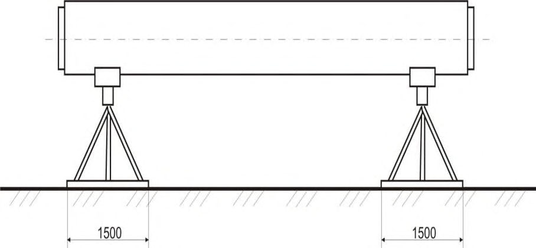
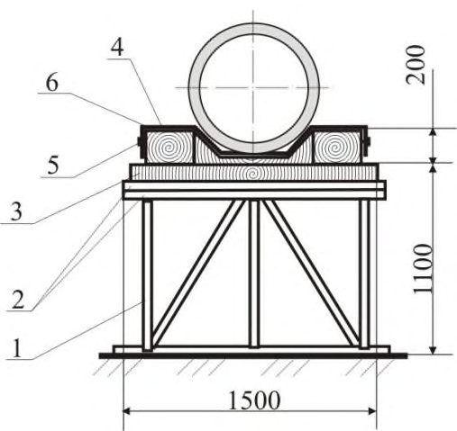
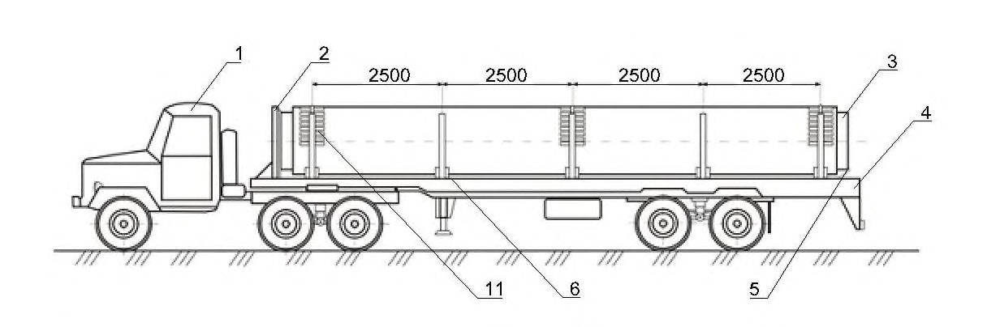
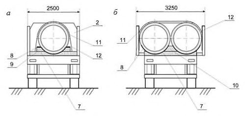
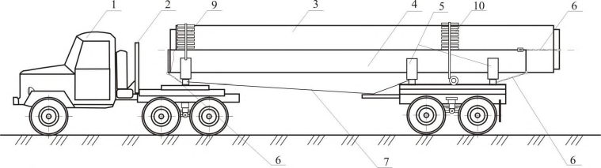
Продолжение таблицы 3
| Характеристика повреждений | Размеры повреждений | Методы ремонта | Схемы повреждений* |
|---|---|---|---|
| 2.6 Повреждения покровного и теплоизоляционного слоев | Длина в осевом направлении - свыше 800 мм | ТП отбраковывается и отправляется на капитальный ремонт | >800 1 2 3 |
| 3 ТП в металлополимерной защитной оболочке* (стальная оболочка с дополнительным наружным покрытием на основе экструдированного полиэтилена и полиуретана) | 3 ТП в металлополимерной защитной оболочке* (стальная оболочка с дополнительным наружным покрытием на основе экструдированного полиэтилена и полиуретана) | 3 ТП в металлополимерной защитной оболочке* (стальная оболочка с дополнительным наружным покрытием на основе экструдированного полиэтилена и полиуретана) | 3 ТП в металлополимерной защитной оболочке* (стальная оболочка с дополнительным наружным покрытием на основе экструдированного полиэтилена и полиуретана) |
| 3.1 Вмятины на поверхности покровного слоя без нарушения герметичности | Длина в осевом направлении - до 400 мм. Глубина: до 12 мм - для диаметров оболочки до 800 мм; до 14 мм - для диаметров оболочки 800 - 1220 мм; до 16 мм - для диаметров оболочки свыше 1220 мм | Допускается не ремонтировать | 400 14-16 1 2 3 Ось трубы |
| 3.2 Сквозные (до металла) повреждения поверхности покровного слоя из полимерных покрытий, без вмятин | Без ограничения длины | Полимерное покрытие - термоплавким карандашом с заплавлением горелкой или ручным экструдером. Полиуретановое покрытие - ремонтным составом, составом для ручного нанесения |
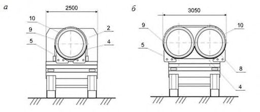
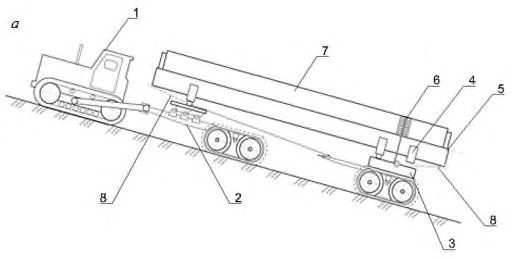
Продолжение таблицы 3
| Характеристика повреждений | Размеры повреждений | Методы ремонта | Схемы повреждений* |
|---|---|---|---|
| 3.3 Пробоины покровного слоя с нарушением герметичности | Длина в осевом направлении - до 400 мм. С повреждением теплоизоляции глубиной до 50 мм | Покровный слой ремонтируется по технологии изоляции стыков сварных соединений. Повреждение теплоизоляции следует заполнять фрагментом или крошкой из ППУ | 400 50 1 2 3 Ось трубы |
| 3.4 Повреждения покровного и теплоизоляционного слоев | Длина в осевом направлении - от 400 до 800 мм. С повреждением глубиной от 50 мм до полной толщины теплоизоляции | Повреждение ремонтируется по технологии изоляции стыков сварных соединений | 400-800 1 2 3 Ось трубы |
| 3.5 Повреждения покровного и теплоизоляционного слоев | Длина в осевом направлении - свыше 800 мм | ТП отбраковывается и отправляется на капитальный ремонт | >800 1 2 3 Ось трубы |
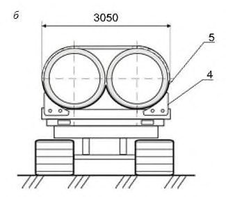
11Входной контроль качества нанесения противокоррозионных и теплоизоляционных покрытий
11.1Входной контроль качества нанесения в заводских или базовых наружных противокоррозионных и теплоизоляционных покрытий
- целостности тары, упаковки, внешнего вида изоляционных материалов;
- сертификатов на изоляционные материалы и соответствие сертификатных данных НД;
- соответствие поставленной продукции НД.
- наименование предприятия-изготовителя покрытия или его товарный знак;
- условное обозначение покрытия;
- номер партии, размер партии;
- применяемый изоляционный или ТМ (с приложением сертификата);
- результаты испытаний покрытия;
- штамп ОТК;
- дата изготовления трубы и СДТ с ТПИ.
- толщина покрытия (для труб с противокоррозионной изоляцией);
- диэлектрическая сплошность (для труб с противокоррозионной изоляцией);
- длина неизолированных участков;
- адгезия покрытия к стали (для труб с противокоррозионной изоляцией).
Примечание -Периодический контроль проводится при изменении марки материалов подклеивающего и основного наружного слоя покрытия, технологии нанесения, но не реже одного раза в 6 мес. при выпуске труб, предназначенных для строительства газонефтепродуктопроводов.
11.2Входной контроль качества противокоррозионных покрытий в трассовых условиях
Для двухкомпонентных грунтовок под термоусаживаемые материалы должно быть обеспечено соотношение компонентов согласно документации на применяемый материал.
Вязкость грунтовки определяют вискозиметром, а плотность - ареометром, в соответствии с НД на конкретное средство измерения.
Армирующие материалы проверяют их возможность разматывания рулонов при температуре их применения, на плотность намотки в рулоне и ровность торцов.
Толщину противокоррозионных покрытий при трассовом нанесении определяют не менее одного раза на каждые 100 м трубопровода, измерения производят в четырех точках сечения трубы, расположенных в двух взаимно перпендикулярных плоскостях. За среднюю толщину принимают среднеарифметическое значение четырех измерений.
- внешнего вида (визуально);
- адгезии;
- толщины сухой пленки (магнитный толщиномер);
- сплошности покрытия (искровой дефектоскоп).
11.3Входной контроль качества теплоизоляционных покрытий в трассовых условиях
Проводится контроль соответствия техническим требованиям, проектной документации, сертификатам качества целостности упаковки и внешнего вида. Выявляются места повреждений, произошедших при транспортировании.
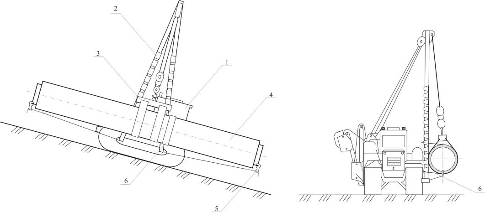
1 - основание (уголок 50×50×5 мм); 2 - швеллеры № 16; 3 - брус (100×150×1500 мм); 4 - ложемент (брус 500×200 мм); 5 - саморез; 6 - эластичная накладка (резина по ГОСТ 7338) шириной 500 мм и толщиной не менее 20 мм
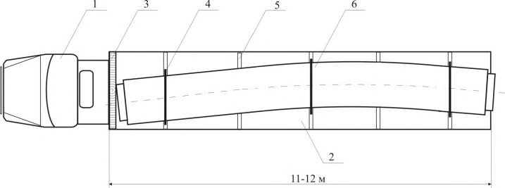
Рисунок 1 - Проверочный стенд и ложемент для проведения входного контроля труб
- толщины теплоизоляционного слоя;
- наружного диаметра оболочки;
- толщины стенки оболочки;
- отклонения осевых линий труб от осей оболочек;
- длины концевых участков труб, свободных от теплогидроизоляции.
При неудовлетворительных результатах инструментального контроля хотя бы по одному из показателей, производится повторный инструментальный контроль на удвоенном числе труб. В случае неудовлетворительных результатов повторного инструментального контроля допускается поштучная приемка труб.
При невозможности осуществления ремонта на трассе дефектную трубу заменяют.
12Операционный контроль нанесения противокоррозионных и теплоизоляционных покрытий
12.1Операционный контроль нанесения противокоррозионных покрытий
- внешний вид
- толщину;
- адгезию;
- число слоев (для лент и оберток) натяжение и ширину нахлеста витков рулонных материалов;
- размер нахлеста на покрытие;
- диэлектрическую сплошность.
При разрушающих методах контроля противокоррозионное покрытие должно быть восстановлено и вновь проконтролировано на диэлектрическую сплошность.
Таблица 4
| Операция, подлежащая контролю | Предмет контроля | Способ контроля, инструмент | Нормативное значение параметра по НД |
|---|---|---|---|
| 1 Подготовительные работы | 1 Подготовительные работы | 1 Подготовительные работы | 1 Подготовительные работы |
| 1.1 Подготовка рабочей и вспомогательной зон | Геометрические размеры рабочей и вспомогательной зон | Рулетка | - |
| 1.2 Контроль параметров нанесения противокоррозионного покрытия | Технологические параметры при нанесении противокоррозионного покрытия | Толщиномер, дефектоскоп, адгезиметр | ГОСТ Р 51164 НД на материал |
| 1.3 Подготовка торцов теплоизоляции заводского покрытия | Глубина среза тепловой изоляции из ППУ | Линейка, рулетка | Глубина среза от 10 до 20 мм |
| 1.4 Очистка поверхности трубопровода и заводского противокоррозионного покрытия в зоне сварного стыка | Степень очистки | Визуально (чистая ткань) | Отсутствие видимых следов загрязнений: земли, снега, наледи, крошек ППУ. Степень очистки должна соответствовать требованиям поставщиков материалов и типу выбранного покрытия |
| 1.5 Сушка изолируемого участка | Отсутствие влаги | Визуально (фильтровальная бумага, мягкая ткань) | Отсутствие влаги |
| 2 Формирование покровного слоя для теплоизоляции зоны сварного стыка при подземной прокладке трубопроводов | 2 Формирование покровного слоя для теплоизоляции зоны сварного стыка при подземной прокладке трубопроводов | 2 Формирование покровного слоя для теплоизоляции зоны сварного стыка при подземной прокладке трубопроводов | 2 Формирование покровного слоя для теплоизоляции зоны сварного стыка при подземной прокладке трубопроводов |
| 2.1 Нанесение шероховатости на поверхность защитной полиэтиленовой оболочки | Шероховатость поверхности | Профилометр, эталоны сравнения | Отсутствие блестящей гладкой поверхности на внешней стороне защитной полиэтиленовой оболочки на расстоянии от торца от 150 до 160 мм |
| 2.2 Подогрев зоны установки герметизационной ленты | Температура подогрева | Контактный термометр | Температура нагрева 40 С 50 С |
Продолжение таблицы 4
| Операция, подлежащая контролю | Предмет контроля | Способ контроля, инструмент | Нормативное значение параметра по НД |
|---|---|---|---|
| 2.3 Установка уплотнителя на внешнюю поверхность оболочки | Точность установки по меткам маркера, ширина уплотнителя и размер нахлеста | Линейка, рулетка | Расстояние от края уплотнителя до меток от 3 до 5 мм. Размер нахлеста (50 5) мм |
| 2.4 Установка термоусаживаемой манжеты | Качество установки манжеты | Визуально, манометр | Манжета с гладкой, ровной, поверхностью в местах усадки должна полностью облегать трубу. По обоим краям уплотнитель должен равномерно выступать по всему периметру трубы. Мыльным раствором проверить герметичность манжеты избыточным давлением воздуха не более 0,1 МПа |
| 3 Формирование покровного слоя для теплоизоляции зоны сварного стыка при надземной прокладке трубопроводов | 3 Формирование покровного слоя для теплоизоляции зоны сварного стыка при надземной прокладке трубопроводов | 3 Формирование покровного слоя для теплоизоляции зоны сварного стыка при надземной прокладке трубопроводов | 3 Формирование покровного слоя для теплоизоляции зоны сварного стыка при надземной прокладке трубопроводов |
| 3.1 Установка центрирующих устройств при длине зоны сварного стыка более 50 см (за исключением скорлуп ППУ и сегментов пеностекла) | Размещение центрирующих устройств в зоне сварного стыка | Линейка, рулетка | От сварного шва на расстоянии от 130 до 140 мм (только для зоны сварного стыка при автоматической сварке) |
| 3.2 Установка уплотнителя на внешнюю поверхность оболочки | Точность установки по меткам маркера, ширина уплотнителя и размера нахлеста | Линейка, рулетка | Расстояние от края уплотнителя до меток от 3 до 5 мм. Размер нахлеста (50 5) мм |
Продолжение таблицы 4
| Операция, подлежащая контролю | Предмет контроля | Способ контроля, инструмент | Нормативное значение параметра по НД |
|---|---|---|---|
| 3.3 Установка стягивающих бандажей | Место установки | Линейка | Расстояние от края манжеты от 10 до 12 мм. При наличии промежуточных центрирующих опор в зоне стыка стягивающие бандажи устанавливают в зоне размещения центрирующих опор |
| 3.4 Установка оболочки из оцинкованной стали | Качество установки манжеты | Визуально. Манометр | По обоим краям манжеты уплотнитель должен равномерно выступать по всему периметру трубы. Мыльным раствором проверить герметичность манжеты избыточным давлением воздуха не более 0,1 МПа |
| 4 Контроль параметров при заливке компонентов пенополиуретана в зону стыка сварного соединения | 4 Контроль параметров при заливке компонентов пенополиуретана в зону стыка сварного соединения | 4 Контроль параметров при заливке компонентов пенополиуретана в зону стыка сварного соединения | 4 Контроль параметров при заливке компонентов пенополиуретана в зону стыка сварного соединения |
| 4.1 Измерение температуры в зоне сварного стыка | Температура в зоне сварного стыка | Термометр | Температура окружающего воздуха в зоне сварного стыка перед заливкой компонентов должна быть не ниже 5 С, температура оболочки в зоне сварного стыка от 25 °C до 30 °C |
| 4.2 Температура компонентов А и Б ППУ | Температура в емкостях заливочной машины | Контактный термометр заливочной машины | Температура в емкостях заливочной машины требования НД на систему ППУ |
| 4.3 Соотношение компонентов ППУ (один раз в смену) | Соотношение компонентов А:Б | Контрольная технологическая проба | Требования НД на систему ППУ |
Окончание таблицы 4
| Операция, подлежащая контролю | Предмет контроля | Способ контроля, инструмент | Нормативное значение параметра по НД |
|---|---|---|---|
| 4.4 Производительность заливочной машины (один раз в смену) | Время заливки компонентов | Взвешивание компонентов А и Б | Заливочная машина, секундомер, весы |
| 4.5 Время заливки компонентов ППУ в зону сварного стыка | Время заливки компонентов | Измерение времени заливки компонентов секундомером | Сравнение измеренного времени с установленным на заливочной машине |
| 4.6 Формирование теплоизоляции из ППУ | Полнота заполнения пространства стыкового соединения вспененным ППУ | Визуально | Начало выхода вспененного ППУ через заливочное и вентиляционное отверстия |
| 4.7 Технологическая выдержка заполненного пространства стыкового соединения | Время выдержки | Часы | Время выдержки 15 мин |
| 4.8 Установка постоянных заглушек на заливочное и вентиляционное отверстия на полиэтиленовых манжетах | Плотность установки постоянных пробок-заглушек на вентиляционное и заливочное отверстия | Визуально | Полнота сплавления материала пробки- заглушки с полиэтиленовой манжеты |
| 4.9 Установка постоянных крышек-заглушек на заливочное и вентиляционное отверстия на манжетах из оцинкованной стали | Плотность установки постоянных крышек-заглушек на вентиляционное и заливочное отверстия с помощью винтов- саморезов | Визуально | Полнота заполнения уплотнителем пространства между крышкой- заглушкой и манжетой из оцинкованной стали |
13Транспортирование и хранение изоляционных материалов, труб и СДТ с ТПИ
13.1Транспортирование железнодорожным транспортом
Транспортирование теплоизолированных труб и соединительных деталей в металлополимерной оболочке по железной дороге должно производиться при температурах от минус 50 °C до плюс 40 о С.
Транспортирование теплоизолированных труб и соединительных деталей в защитной оболочке из оцинкованной стали следует осуществлять при температурах от минус 60 о С до плюс 50 °C.
13.2Транспортирование автомобильным транспортом
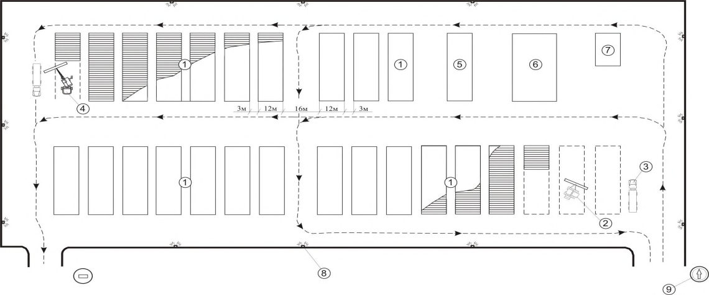
Рисунок 2 - Пример схемы размещения теплоизолированных труб диаметрами 1020 мм и 1220 мм на автомобильном полуприцепе
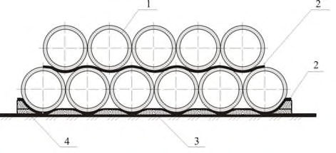
а - транспортирование одной теплоизолированной трубы на съемном пенале; б - транспортирование двух теплоизолированных труб на съемных пеналах; 1 - трубовоз-плетевоз; 2 - предохранительный щит; 3 -теплоизолированная труба; 4 - съемный пенал; 5 - коник; 6 - цепное стопорное устройство; 7 - тяговостраховой канат; 8 - резиновая прокладка; 9 - подкладка под увязочный пояс; 10 - увязочный пояс
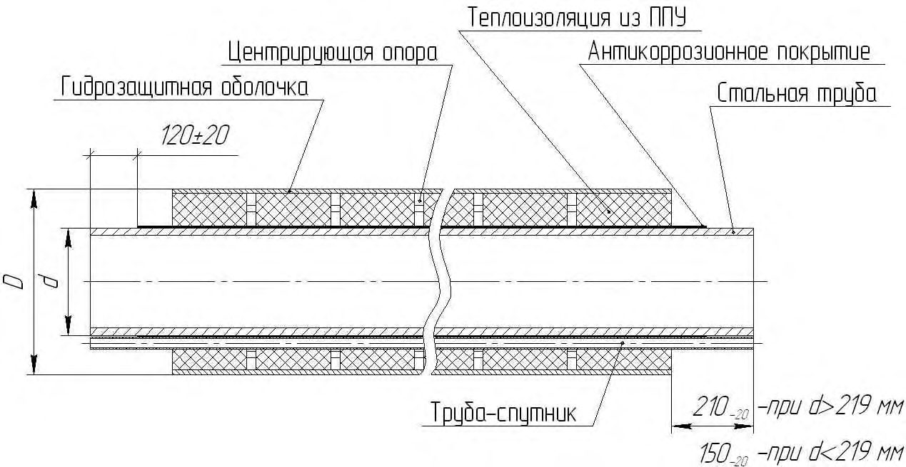
Рисунок 3 - Пример схемы размещения теплоизолированных труб на съемном пенале трубовоза-плетевоза
Пеналы в передней и задней частях должны закрепляться от продольных перемещений на кониках тягача и прицепа-роспуска трубовоза-плетевоза стопорными грузовыми цепями.
При перевозке двух труб на трубовозе-плетевозе укладывают два пенала. Внутри пенала выкладывается резиновая прокладка толщиной 20 мм.
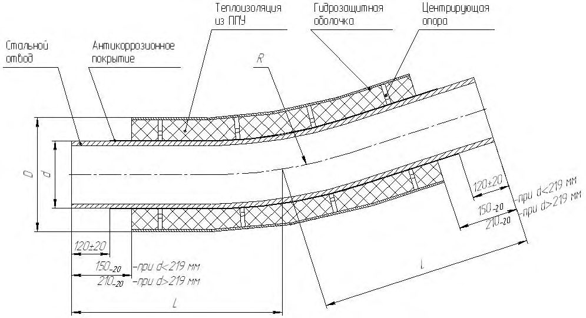
а - расположение трубы (труб) на тракторном трубовозе-плетевозе; б - транспортирование теплоизолированных труб на съемном пенале; 1 - тракторный трубовоз-плетевоз; 2 - полуприцеп с гусеничным движителем; 3 - прицеп-роспуск с гусеничным движителем; 4 - коник; 5 - съемный пенал; 6 -увязочный пояс; 7 - труба; 8 - цепное стопорное устройство
Рисунок 4 - Пример схемы размещения теплоизолированных труб на съемной платформе тракторного трубовоза-плетевоза
В зимний период, на заснеженных и обледенелых участках дорог с подъемом 7 о и более, перемещение автопоездов должно производиться с помощью дежурных тракторов, с применением цепей противоскольжения на колесах автопоездов, посыпки дороги песком или шлаком и др.
Рисунок 5 - Доставка теплоизолированных труб на стреле трубоукладчика на уклонах крутизной более 15 о
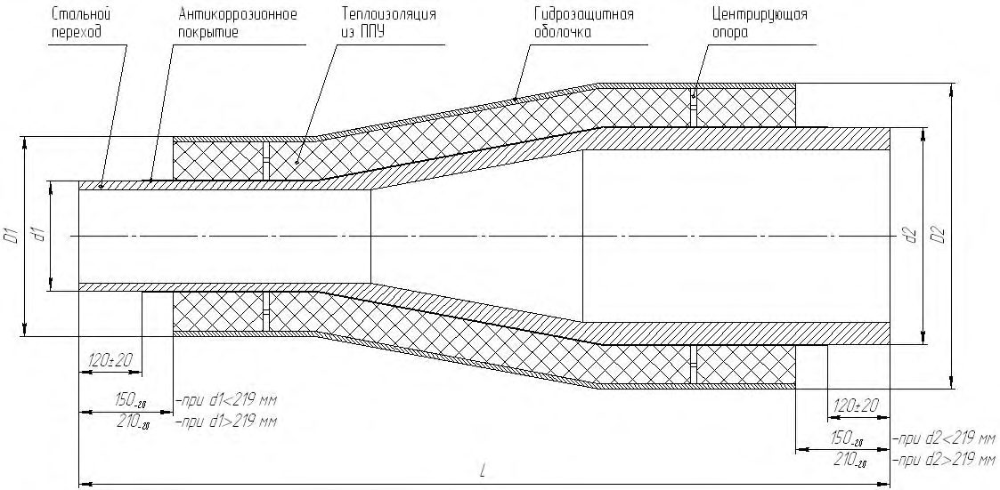
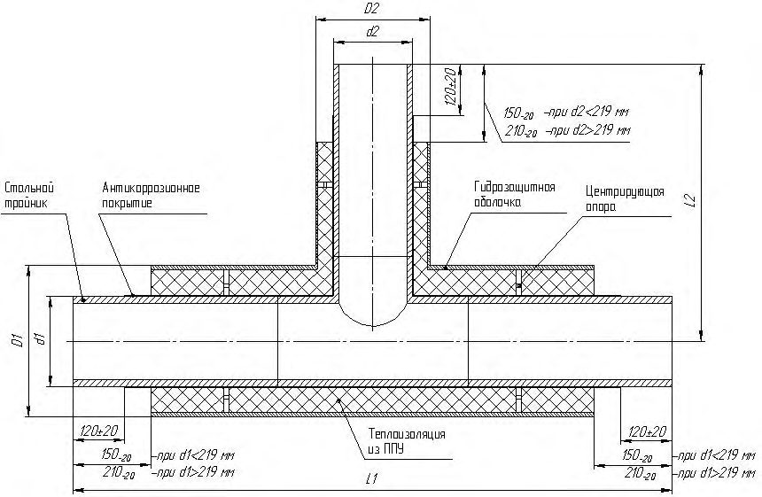
1 - автомобиль-тягач; 2 - автомобильный полуприцеп; 3 - предохранительный щит, облицованный деревом; 4 - увязка; 5 - ложемент; 6 - теплоизолированный отвод
Рисунок 6 - Пример схемы перевозки теплоизолированного отвода на автомобильном полуприцепе
13.3Складирование и хранение изолированных труб и соединительных деталей трубопровода в трассовых условиях
Срок хранения всех изоляционных материалов и условия их хранения устанавливаются в НД на эти материалы.
13.3.3 Склады должны соответствовать следующим требованиям:
- иметь удобные подъездные пути, проезды и места для прохода людей;
- обеспечивать быстрое и безопасное выполнение погрузочноразгрузочных и складских операций в любое время суток;
- площадки для размещения труб должны быть спланированы и утрамбованы;
- на площадках предусматренны уклоны не более 3 о для отвода атмосферных и грунтовых вод.
Склады должны обеспечивать сохранность труб и СДТ, пожарную безопасность и охрану труда.
Между смежными штабелями труб и соединительных деталей должны быть оставлены проходы шириной 1-3 м и более.
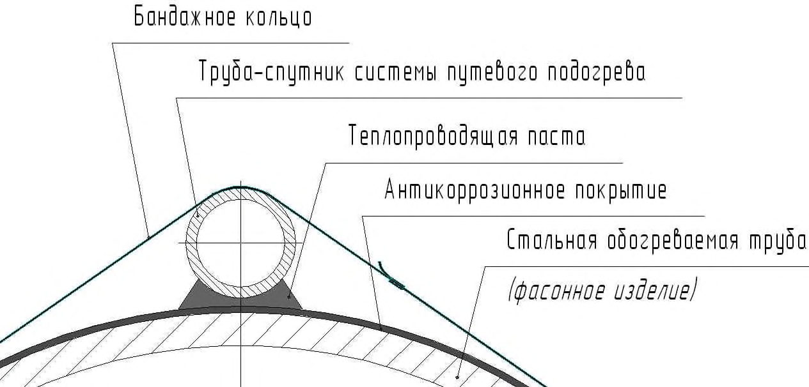
1 - штабель труб и деталей; 2 - трубоукладчик; 3 - трубовоз-плетевоз; 4 - автокран; 5 - площадка входного контроля труб и деталей; 6 - площадка ремонта повреждений труб и деталей; 7 - штабель бракованных труб и деталей; 8 - мачта освещения; 9 - дорожный знак
Рисунок 7 - Схема организации работ на притрассовом складе
Запрещается сбрасывание, скатывание, соударение и волочение труб и соеденительных деталей трубопровода по земле.
Нижний ярус труб следует укладывать на четыре обрезиненные деревянные подкладки из бруса 250×250 мм с дугообразными вырезами под трубы глубиной не менее 100 мм (рисунок 8). Толщина резины (резино-тканевых прокладок) должна быть не менее 20 мм, а ширина не менее 250 мм.
Две подкладки размещаются на расстоянии 1,5 м от торцов труб, а две другие - на расстоянии 2,6 м от первых. По концам подкладок, для нижнего яруса труб, следует устанавливать упорные башмаки, обшитые резиной.
Верхний ярус труб укладывается в седло первого яруса на четырех резиновых прокладках шириной 500 мм и толщиной 20 мм.
Отводы холодного гнутья, поступающие без заводской упаковки, складируются в один ярус, на ложементах, не оказывающих негативного воздействия на антикоррозионное покрытие.
При этом по отдельности укладываются отводы с одинаковыми углами гиба. Расстояние между соседними отводами должно быть 0,5-0,6 м.
Трубы диаметром более 300 мм могут укладываться в штабель высотой до 8 м на площадку, оборудованную боковыми упорами, облицованными мягкими материалами, для предупреждения раскатывания труб. При ручных операциях по строповке труб и освобождению захватов, вызывающих необходимость нахождения людей на штабелях труб, высота штабеля должна быть не более 3 м.
Трубы разных типоразмеров по диаметру, толщине стенки, типу и толщине противокоррозионного и ТП должны складироваться в разные штабели.
При укладке в штабель труб разной длины их следует выравнивать по торцам с одной стороны.
Следует исключать соударение труб и соединительных деталей, а также их протаскивание по штабелю при укладке труб или при подъеме труб со штабеля.
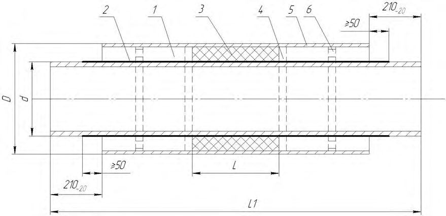
1 - теплоизолированная труба; 2 - резино-тканевая прокладка; 3 - деревянный брус (ложемент); 4 - упорный башмак
Рисунок 8 - Пример схемы устройства штабеля и крепления теплоизолированных труб
14Методы контроля в трассовых условиях
- внешний вид - по ГОСТ 9.304 визуально невооруженным глазом при освещенности не менее 300 лк на расстоянии 20-30 см от покрытия или с применением оптических приборов, указанных в НД на покрытие, и сравнивают с эталонами крупности зерна на поверхности покрытия, утвержденными в установленном порядке;
- толщину сухой пленки - магнитным или ультразвуковым толщиномером по ГОСТ 9.304. Допускается отклонение от заданной толщины нанесенного слоя в пределах 20%. При этом толщина покрытия в любой измеряемой точке должна быть не меньше минимальной, установленной в НД;
- диэлектрическую сплошность покрытия - искровым дефектоскопом;
- адгезию - методом решетчатого надреза при суммарной толщине до 250 мкм и методом x-образного надреза при суммарной толщине свыше 250 мкм в соответствии с ГОСТ 31149.
- внешний вид покрытия - на каждой трубе и СДТ визуально, без применения увеличительных средств или сравнением с эталонными образцами, утвержденными в установленном порядке;
- толщину покрытия - на каждой трубе и СДТ методом неразрушающего контроля с применением толщиномера, внесенного в Государственный реестр средств измерений, предназначенного для измерения толщины немагнитных покрытий. Измерение толщины покрытия производят не менее чем в десяти точках: на верхней, нижней и боковых образующих трубы и СДТ, начиная от края изолированных концов, а также в местах, вызывающих сомнение;
- диэлектрическую сплошность покрытия - искровым дефектоскопом.
АПриложение А. Основные характеристики тепловой и противокоррозионной изоляции
- А.1 Схематическая конструкция и размеры теплоизолированной трубы (в данном случае - с трубой-спутником) приведена на рисунке А.1.
D - наружный диаметр гидрозащитной оболочки; d - наружный диаметр стальной трубы
Рисунок А.1 - Конструкция теплоизолированной стальной трубы
- А.2 Наружный диаметр стальных труб, подлежащих теплоизоляции в заводских условиях - от 57 мм до 1400 мм включительно.
- А.3 Длина стальных труб, подлежащих теплоизоляции в заводских условиях, для диаметров не более 219 мм должна быть от 8 до12 м, диаметром 273 мм и выше - от 10 до12 м.
При соответствующем обосновании допускается применение стальных труб иной длины.
- А.4 Предельные отклонения стальных труб по длине, диаметру и толщине стенки должны соответствовать НД на трубы.
- А.5 Длина концов стальных труб, свободных от противокоррозионного покрытия, должна соответствовать указанной в НД.
Допускается увеличение или уменьшение длины свободных от покрытия концов труб и нанесение на них защитного консервационного покрытия на период транспортирования и хранения изолированных труб.
- А.6 Длина концов стальных труб без тепловой изоляции должна быть (150±20) мм для труб диаметром до 219 мм включительно и (210±20) мм - для труб диаметром свыше 219 мм.
- А.7 Допускается изменение длины свободных от теплоизоляции (и гидроизоляции) концов труб в соответствии с требованиями выполнения сварочно-монтажных работ, при этом противокоррозионное покрытие должно выступать из-под теплоизоляции не менее чем на 50 мм.
А.8 Длина полиэтиленовых, тонколистовых стальных и металлополимерных гидрозащитных оболочек должна равняться длине теплоизоляционного слоя или быть длиннее не более чем на 10 мм.
А.9 Рекомендуемые значения диаметров и толщин стенок полиэтиленовых и металлических оболочек приведены в таблице А.1.
А.10 Предельные отклонения наружных диаметров теплоизолированных труб по оболочке из тонколистовой стали и предельные отклонения наружных диаметров теплоизолированных труб по полиэтиленовой оболочке должны соответствовать значениям, приведенным в таблице А.1.
Таблица А.1 Рекомендуемые размеры теплоизолированных труб
| Полиэтиленовая труба-оболочка | Полиэтиленовая труба-оболочка | Полиэтиленовая труба-оболочка | Металлическая спирально-замковая труба- оболочка | Металлическая спирально-замковая труба- оболочка | Металлическая спирально-замковая труба- оболочка |
|---|---|---|---|---|---|
| Наружный диаметр D , мм | Толщина стенки S , мм | Толщина теплоизоляции (справочная), мм | Наружный диаметр D , мм | Толщина* стенки) S , не менее, мм | Толщина* теплоизоляции* (справочная), мм |
| 180 +5,4 | 3,0 +0,5 | 33 | 180 +10,0 | 0,55 | 53,0 |
| 200 +5,9 | 3,2 +0,5 | 43 | 200 +10,0 | 0,55 | 45,4 |
| 225 +6,6 | 3,5 +0,6 | 42,5 | 225 +10,0 | 0,6 | 45,4 |
| 250 +7,4 | 3,9 +0,7 | 54,5 | 250 +10,0 | 0,7 | 57,8 |
| 250 +7,4 | 3,9 +0,7 | 41,5 | 250 +10,0 | 0,7 | 44,8 |
| 280 +8,3 | 4,4 +0,7 | 55,5 | 280 +10,0 | 0,7 | 59,5 |
| 315 +9,8 | 4,9 +0,7 | 42 | 315 +10,0 | 0,7 | 47,3 |
| 355 +10,4 | 5,6 +0,8 | 62 | 355 +10,0 | 0,7 | 67,3 |
| 400 +11,7 | 6,3 +0,8 | 57 | 400 +10,0 | 0,8 | 62,7 |
| 450 +13,2 | 7,0 +0,9 | 81,5 | 450 +10,0 | 0,8 | 87,7 |
| 450 +13,2 | 7,0 +0,9 | 55,5 | 450 +10,0 | 0,8 | 61,7 |
| 500 +14,6 | 7,8 +1,0 | 79,5 | 500 +10,0 | 0,8 | 86,7 |
| 560 +16,3 | 8,8 +1,1 | 58,2 | 560 +10,0 | 1,0 | 66,2 |
| 630 +16,3 | 9,8 +1,2 | 92,5 | 580 +10,0 | 1,0 | 76,0 |
| 710 +20,4 | 11,1 +1,3 | 78,9 | 710 +10,0 | 1,0 | 89,0 |
| 800 +23,4 | 12,5 +2,5 | 72,5 | 800 +10,0 | 1,0 | 84,0 |
| 900 +26,3 | 14,0 +2,9 | 76 | 900 +10,0 | 1,0 | 89,0 |
| 1000 +29,2 | 15,6 +3,2 | 72,4 | 975 +10,0 | 1,0 | 76,5 |
| 1100 +32,1 | 17,6 +3,5 | 122,5 | 1000 +10,0 | 1,0 | 89,0 |
| 1100 +32,1 | 17,6 +3,5 | 74,4 | 1075 +10,0 | 1,0 | 76,5 |
| 1200 +35,1 | 19,6 +3,8 | 120,5 | 1100 +10,0 | 1,0 | 89,0 |
| 1200 +35,1 | 19,6 +3,8 | 70,4 | 1200 +10,0 | 1,0 | 89,2 |
| 1420 +38,2 | 19,6 +3,8 | 79 | 1375 +10,0 | 1,0 | 79,0 |
| 1460 +39,0 | 19,6 +3,8 | 100 | 1400 +10,0 | 1,0 | 91,5 |
| 1620 +41,2 | 19,6 +3,8 | 80 | 1575 +10,0 | 1,0 | 77,0 |
| 1660 +42,0 | 19,6 +3,8 | 100 | 1600 +10,0 | 1,0 | 89,5 |
А.11 Диаметр и толщина стальной оболочки, приведенные в таблице А.1 - рекомендуемые и могут быть уточнены в зависимости от конкретных условий проектирования и технико-экономического обоснования.
- А.12 Допустимое отклонение осевых линий стальных труб от осей труб-оболочек в конструкциях теплоизолированных труб приведено в таблице А.2.
- А.13 Толщина противокоррозионного эпоксидного покрытия по стальной трубе должна быть 0,35 мм; толщина двухслойного и трехслойного полиэтиленовых покрытий должна выбираться в зависимости от конструкции покрытия и диаметров труб из таблицы 2 ГОСТ 31448-2012 или таблицы 1 ГОСТ Р 51164-98.
Толщина противокоррозионного покрытия на металлополимерной оболочке (трехслойное полиэтиленовое покрытие) должна быть не менее 2,0 мм для диаметров до 530 мм включительно и не менее 3,0 мм для диаметров свыше 530 мм.
Толщина противокоррозионного покрытия на металлополимерной оболочке должна быть не менее 2,0 мм.
Таблица А.2 Допустимое отклонение осевых линий стальных труб от осей труб-оболочек
| Наружный диаметр защитной оболочки, мм | Отклонение осей, мм |
|---|---|
| Св. 180 до 400 включ. | 5,0 |
| Св. 400 до 630 включ. | 8,0 |
| Св. 630 до 800 включ. | 10,0 |
| Св.800 до 1200 включ. | 14,0 |
| Св 1200 до 1375 включ. | 16,0 |
| Св.1375 до 1600 включ. | 18,0 |
А.14 Для сохранения геометрических размеров в конструкции применяют центрирующие опоры, которые должны обеспечивать центрирование трубы/СДТ по отношению к внешней защитной оболочке в процессе заливки ППУ. При наличии иных технологических возможностей центрирования трубы/ СДТ по отношению к внешней защитной оболочке в процессе заливки ППУ, центрирующие опоры допускается не использовать.
Высота центрирующих опор должна быть равна расстоянию между наружным диаметром стальной трубы/ соединительной детали и внутренним диаметром трубы-оболочки.
А.15 Значение расстояний между центрирующими опорами в конструкции теплоизолированных труб должно соответствовать значениям, приведенным в таблице А.3.
Таблица А.3
| Наружный диаметр трубы-оболочки, мм | Расстояние между центрирующими опорами, мм |
|---|---|
| До 450 включ. | 1500±100 |
| Св. 450 до 900 включ. | 1000±50 |
| Св. 900 до 1600 включ. | Не более 1000 |
А.16 Размеры теплоизолированных соединительных деталей определяются проектной документацией.
Основные размеры теплоизолированных соединительных деталей: наружный диаметр стальной трубы и СДТ, толщина теплоизоляционного слоя, толщина наружной гидрозащитной оболочки должны соответствовать размерам прямой теплогидроизолированной трубы.
А.17 Значение толщины стенки патрубка и соединительной детали определяется проектным решением, согласованным с эксплуатирующей трубопровод организацией.
А.18 Основные конструктивные размеры теплоизолированных соединительных деталей трубопроводов для стандартного ряда диаметров стальных труб приведены на рисунках А.2 - А.4.
Рисунок А.2 - Конструкция тепловой изоляции отводов трубопроводов
Рисунок А.3 - Конструкция тепловой изоляции переходов трубопроводов
Рисунок А.4 - Конструкция тепловой изоляции тройников трубопроводов
- А.19 Допускается нанесение ТП на соединительные детали других промежуточных диаметров.
- А.20 Длина концевых участков соединительной детали свободных от тепловой изоляции, должна быть равна указанной в НД.
- А.21 Толщина противокоррозионного покрытия на основе термореактивных полимеров в зависимости от типа исполнения и условий эксплуатации должна соответствовать таблице 1 ГОСТ Р 51164-98.
Толщина трехслойного полиэтиленового покрытия гнутых отводов в зависимости от диаметра и типа исполнения покрытия может быть от 2 до 3, 5 мм.
А.22 Толщина теплоизоляции прямых участков соединительных деталей должна быть равна толщине теплоизоляции труб.
А.23 Расстояние между центрирующими опорами в конструкции теплоизолированных соединительных деталей определяется из условий удобства монтажа.
А.24 Допускается изготавливать нестандартные стальные соединительные детали по нормативным документам, утвержденным в установленном порядке.
А.25 Трехслойное полимерное покрытие должно состоять из:
- адгезионного подслоя на основе эпоксидных порошковых или жидких красок; минимальная толщина сухой пленки: не менее 60 мкм - для порошковых красок, 20 мкм - для жидких красок. Толщина согласовывается с застройщиком (техническим заказчиком);
- клеящего подслоя на основе термоплавких полимерных композиций; минимальная толщина: не менее 150 мкм - при порошковом нанесении, не менее 200 мкм - при нанесении методом экструзии;
- наружного слоя на основе экструдированного полиэтилена.
А.26 Двухслойное полимерное покрытие должно состоять из:
- адгезионного подслоя на основе термоплавких полимерных композиций;
- наружного слоя на основе термосветостабилизированного полиэтилена.
- наружного слоя на основе экструдированного полипропилена.
А.27 Однослойное эпоксидное и термореактивное покрытия состоят из одного изоляционного слоя.
БПриложение Б. Материалы и изделия, применяемые для изготовления теплоизоляционного слоя
Все материалы, применяемые для изготовления теплоизолированных труб и соединительных деталей, должны быть сертифицированы, с пожарным и гигиеническим сертификатами.
Исходные материалы для изготовления противокоррозионного покрытия, компоненты пенополиуретана, материалы для изготовления защитных труб-оболочек должны проходить входной контроль по ГОСТ 24297 и соответствующим НД.
- Б.1 В качестве теплоизоляционного материала используют экологически безопасные типы заливочных бесфреоновых пенополиуретанов.
- Б.2 ТП труб и соединительных деталей должно соответствовать таблице Б.1.
- Б.3 Структура пенополиуретана в разрезе должна быть равномерная мелкоячеистая. Пустоты (каверны) размером более 1/3 толщины теплоизоляционного слоя не допускаются.
- Б.4 Для защиты торцов теплоизоляции и концов труб/СДТ от влаги применяют термоусаживаемые материалы.
Таблица Б.1 -Характеристики пенополиуретана и конструкции тепловой изоляции
| Наименование показателя | Значение показателя для трубы диаметром | Значение показателя для трубы диаметром |
|---|---|---|
| до 720 мм | 720 мм и выше | |
| 1 Внешний вид | Жесткая ячеистая пластмасса от светло- желтого до светло-коричневого цвета равномерной мелкоячеистой структуры | Жесткая ячеистая пластмасса от светло- желтого до светло-коричневого цвета равномерной мелкоячеистой структуры |
| 2 Кажущаяся плотность в ядре, кг/м³ , не менее | 60 | 75 |
| 3 Прочность при сжатии при 10% деформации, кПа, не менее | 300 | 500 |
| 4 Теплопроводность в готовом изделии, Вт/м·К, не более: - при температуре (20±3) С; - при температуре (0±3) С | 0,028 0,025 | 0,033 0,030 |
| 5 Водопоглощение при кипячении в течение 90 мин, %по объему, не более | 10,0 | 10,0 |
| 6 Прочность на сдвиг в осевом направлении при 20 С, МПа, не менее | 0,12 | 0,12 |
| 7 Прочность на сдвиг в тангенциальном направлении при 20 о С, МПа, не менее | ||
| 8 Толщина цинкового покрытия, мкм | 18÷40 | 18÷40 |
Допускается применение лака, свойства которого должны соответствовать ГОСТ 5631, мастики битумно-резиновой изоляционной по
ГОСТ 15836 или другой полимерной грунтовки, исключающей проникновение влаги в ППУ в период транспортирования и хранения труб и СДТ.
Б.5 Для изготовления полиэтиленовых труб-оболочек должны применять полиэтилен по ГОСТ 18599.
Б.6 Полиэтиленовые трубы-оболочки должны соответствовать ГОСТ 30732.
Б.7 Спирально-замковые трубы и свальцованные оболочки (оцинкованная оболочка) изготавливают из стальной оцинкованной ленты по ГОСТ 14918 первого класса с нормальной разнотолщинностью или с цинковым покрытием не ниже класса 275 по ГОСТ Р 52246. Спиральнозамковые трубы и свальцованные оболочки (металлополимерные оболочки) изготавливают из стали по ГОСТ 16523, ГОСТ 19904.
Б.8 При протечках пенополиуретана (не более 5 % по объему) через шов стальных оболочек допускается их герметизация - требование применимо только для промысловых трубопроводов.
В случае, если объем вытекающего из шва пенополиуретана составляет более 5 % (по объему) всего заливаемого объема, труба бракуется.
Б.9 Для противокоррозионной защиты металлополимерной оболочки применяют противокоррозионное покрытие заводского нанесения, соответствующее ГОСТ Р 51164.
Покрытие металлополимерной оболочки должно быть нанесено на всю длину оболочки. Допускается отсутствие покрытия на концевых участках длиной не более 15 мм. Угол скоса краев покрытия должен быть не более 30°.
Б.10 В качестве труб-спутников для подогрева могут использоваться бесшовные стальные трубы с наружным диаметром от 15 до 60 мм и толщиной стенки не менее 2 мм, которые должны соответствовать по ГОСТ 8731 (гр.В), ГОСТ 8733 (гр. В), ГОСТ 33228, ГОСТ 32528, ГОСТ 20295. Допускается нанесение эпоксидного противокоррозионного покрытия на поверхность труб-спутников.
Б.11 Трубу-спутник на стальной рабочей трубе/соединительной детали укладывают на теплопроводящую пасту по ГОСТ 19783 и закрепляют бандажными кольцами. Длина трубы-спутника должна быть равна длине стальной трубы.
Б.12 Теплопроводящую однородную пасту наносят равномерно на противокоррозионное покрытие по всей длине теплоизоляционного слоя в пространство между трубой-спутником и обогреваемой трубой (рисунок Б.1).
Рисунок Б.1 - Схема установки трубы-спутника на обогреваемой стальной трубе/соединительной детали
- Б.13 Смещение одного конца трубы-спутника относительно другого должно быть не более 3 мм.
- Б.14 На теплоизолированных трубах/соединительных деталях располагают только трубы-спутники. Остальной монтаж системы путевого подогрева производится в трассовых условиях.
- Б.15 Центрирующие опоры изготавливают из полиэтилена по ГОСТ 16338 или из полипропилена по ГОСТ 26996. Допускается изготовление комбинированных опор из полипропилена или полиэтилена и стягивающих поясов из металлической или полимерной ленты.
На ободе центрирующей опоры должен быть предусмотрен замок, с помощью которого обеспечивается жесткая фиксация опоры на трубе/соединительной детали.
Б.16 При применении в конструкции центрирующих опор металлических стяжных лент, они не должны касаться противокоррозионного покрытия трубы.
- Б.17 Допускается использовать в качестве центрирующих опор сегментов из пенополиуретана по соответствующим НД.
Креплением центрирующих опор на трубе должно быть обеспечено фиксированное расстояние между ними после установки защитной оболочки и заливки ППУ.
Б.18 Для предотвращения распространения возможного возгорания ТП на трубы устанавливаются противопожарные вставки.
- Б.19 В качестве огнестойкой противопожарной вставки используют материалы из минеральной ваты, базальтового волокна, пеностекла по ГОСТ 4640, ГОСТ 21880, ГОСТ 23208.
- Б.20 Конструкция противопожарных вставок представлена на рисунке Б 2.
1 - теплоизоляционный слой из ППУ; 2 - противокоррозионное покрытие; 3 - негорючая тепловая изоляция; 4 - ограничительный фланец; 5 - защитная оболочка; 6 - центрирующая опора; D - наружный диаметр стальной трубы; L - длина противопожарной вставки; L1 - длина трубы
Рисунок Б. 2 - Конструкция трубы с теплоизоляционным покрытием и противопожарной вставкой
Б.21 Значения физико-механических показателей вставки из минерального (базальтового) волокна должны соответствовать приведенным в таблице Б 2.
Таблица Б.2
| Наименование показателя | Значения показателя |
|---|---|
| 1 Плотность, кг/м³ | 75-125 |
| 2 Теплопроводность, Вт/м. °С, не более при температуре: (25±5) °С, | 0,048 |
| (10±5) °С | 0,037 |
| 3 Влажность, %по массе, не более | 2 |
| 4 Сжимаемость, %, не более | 20-18 |
| 5 Содержание органических веществ, %по массе, не более | 3-4 |
| 6 Горючесть, группа | НГ - для плотности не более 75 кг/м³ и Г1 - более 75 кг/м³ |
| 7 Температура применения, °С | 700-1000 |
- Б.22 Значения физико-механических показателей вставки из пеностекла должны соответствовать приведенным в таблице Б.3.
- Б.23 Негорючий теплоизоляционный материал на минеральной основе (мат, скорлупа) толщиной, равной толщине теплоизоляционного слоя трубы, укладывают посередине конструкции на поверхность стальной трубы в одиндва слоя (укладывают столько слоев, сколько нужно для набора требуемой толщины теплоизоляционного слоя) с перекрытием швов и закрепляют бандажными кольцами из упаковочной ленты по ГОСТ 3560, ГОСТ 6009 и
ГОСТ 503 или стальной проволокой диаметром 1,2-2,0 мм по ГОСТ 3282. Крепления устанавливают через каждые 500-700 мм.
Таблица Б.3
| Наименование показателя | Значение показателя |
|---|---|
| 1 Плотность, кг/м³ , не менее | 110 |
| 2 Предел прочности на сжатие, МПа, не менее | 0,70 |
| 3 Теплопроводность при температуре 20 °С, Вт/м °С | 0,055 |
| 4 Водопоглощение за 24 ч, %по объему, не более | 0,5 |
| 5 Группа горючести | НГ |
Б.24 В качестве теплоизоляционной конструкции участков сварного стыка трубопроводов надземной прокладки может использоваться:
- пенополистирол с защитной оболочкой из оцинкованной стали;
- скорлупы ППУ;
- пенокаучук с защитной оболочкой из оцинкованной стали.
Б.25 В качестве теплоизоляционной конструкции участков сварного стыка трубопроводов подземной прокладки может использоваться теплоизоляционная конструкция на основе пенополистирола с защитной оболочкой из полимерной ленты и скорлупы ППУ. Требования к материалам приведены в таблицах Б.1, Б.4 и Б.5.
Таблица Б.4 Технические характеристики пенополистирола
| Наименование показателя (характеристики) | Значение показателя (характеристики) |
|---|---|
| 1 Внешний вид | Однородная ячеистая структура. Не допускаются трещины, отверстия и разрывы. Не допускается наличие выпуклостей и впадин в любом направлении высотой (глубиной) более 3 мм |
| 2 Плотность, кг/м³ , не менее | 38 |
| 3 Прочность на сжатие при 10 %- ной линейной деформации, кПа, не менее | 500 |
| 4 Теплопроводность при температуре 25°С, Вт/(м·К), не более | 0,033 |
| 5 Водопоглощение за 24 ч, %по объему, не более | 0,2 |
Таблица Б.5 Технические характеристики пенокаучука
| Наименование показателя (характеристики) | Значение показателя (характеристики) |
|---|---|
| 1 Внешний вид | Однородная ячеистая структура от серого до черного цвета. Не допускаются трещины, отверстия и разрывы |
| 2 Плотность, кг/м³ , не менее | От 40 до 100 |
| 3 Теплопроводность при температуре 25 °С, Вт/(м·К), не более | 0,05 |
| 4 Водопоглощение за 24 ч, %по объему, не более | 3,0 |
| 5 Группа горючести по ГОСТ 30244 | Г1 |
ВПриложение В. Рекомендации по технологии нанесения противокоррозионных покрытий в заводских и базовых условиях
В.1 Полиэтиленовые покрытия наносятся при температурах, указанных в технологических картах, в зависимости от применяемых изоляционных материалов. Для нагрева труб рекомендуется применять печи индукционного нагрева, проходные газовые печи и печи с инфракрасными горелками, не оставляющими на поверхности труб копоти или других загрязнений.
В.2 При нанесении двухслойного полиэтиленового покрытия в качестве первого слоя используется адгезионный подслой из полимерных термоплавких композиций толщиной не менее 200 мкм.
В.3 Наружный полиэтиленовый слой наносится по адгезионному подслою методом кольцевой или боковой плоскощелевой экструзии, с применением экструдера, укомплектованного соответствующими фильерами. При нанесении полиэтиленового покрытия методом боковой плоскощелевой экструзии оно наносится с перекрытием в 3-5 слоев. Слои покрытия должны быть равномерными, равнотолщинными, без пузырей, прожогов, пропусков. После нанесения полиэтиленового покрытия производится его прикатка с применением ролика, изготовленного из эластичного материала с антиадгезионными свойствами. При нанесении полиэтиленового покрытия методом кольцевой экструзии расплав полимера наносится через вакууммированную фильеру в один слой. При этом прикатка покрытия не производится.
В.4 При нанесении трехслойного полиэтиленового покрытия в качестве первого слоя покрытия толщиной не менее 60 мкм используется грунтовка на основе порошковой краски. Грунтовка наносится на предварительно очищенные и нагретые до заданной температуры трубы методом пневматического или электростатического распыления. Второй слой -адгезионный подслой на основе термоплавкой полимерной композиции толщиной не менее 200 мкм и третий слой - наружное полиэтиленовое покрытие толщиной 1,5-2,5 мм.
В.5 После нанесения и прикатки экструдированного полиэтиленового покрытия производится его охлаждение водой.
В.6 Покрытие снимается с концевых участков труб на расстоянии, указанном в НД, угол скоса краев полиэтиленового покрытия к поверхности трубы должен быть не более 30°.
В.7 Конструкция и толщина эпоксидного покрытия должны соответствовать ГОСТ Р 51164-98 (приложение А) и НД на трубы с покрытием.
В.8 Подготовка труб и сварных трубных секций к нанесению эпоксидного покрытия должна соответствовать разделу 5.
В.9 Эпоксидное покрытие наносится на трубы при температурах в зависимости от применяемых изоляционных материалов. Для нагрева труб рекомендуется применять индукционный нагрев; допускается применять проходные газовые печи, печи с инфракрасными горелками, не оставляющие на поверхности труб копоти или других загрязнений.
В.10 Нанесение эпоксидного покрытия осуществляется в камерах проходного типа посредством напыления на трубы в электростатическом поле порошковой эпоксидной краски. Пистолеты-распылители должны быть установлены таким образом, чтобы обеспечивалось равномерное, с перекрытием напыление эпоксидного слоя общей толщиной 350-400 мкм. Установки по нанесению эпоксидного покрытия помимо камеры напыления должны быть оборудованы фильтрами, узлами по подготовке и рекуперации порошковой краски.
В.11 После нанесения эпоксидного покрытия производится его отверждение при заданных температурах нагрева. Трубы с покрытием охлаждаются посредством обдува воздухом или в тоннеле водяного охлаждения.
- В.12 Покрытие не наносится на концевые участки труб (80-100 мм) или снимается с концевых участков механическими металлическими щетками.
- В.13 Конструкция и толщина термореактивных покрытий должны соответствовать ГОСТ Р 51164-98 (приложение А) и НД на трубы с покрытием.
- В.14 Подготовка труб и СДТ к нанесению термореактивного покрытия должна соответствовать разделу 5.
- В.15 Температура на поверхности трубы и СДТ при нанесении термореактивных покрытий должна быть не ниже указанной в НД на покрытие.
В.16 Термореактивное двухкомпонентное покрытие на основе быстроотверждающихся (без органических растворителей) полиуретановых смол наносится на очищенные и нагретые до заданной температуры трубы и соединительные детали трубопроводов методом безвоздушного «горячего» напыления смеси компонентов (смола + отвердитель). Температура нагрева полиуретановой смолы, а также соотношение компонентов в смеси определяются выбранными изоляционными материалами.
- В.17 Для безвоздушного напыления двухкомпонентного термореактивного покрытия могут применяться установки с одним или несколькими пистолетами-распылителями.
- В.18 В зависимости от выбранной конструкции покрытие может наноситься в один слой или в два - три слоя после промежуточной сушки каждого слоя. После нанесения производится отверждение покрытия на воздухе до необходимой твердости, после чего трубы с покрытием могут передаваться на участок складирования.
- В.19 Конструкция и толщина покрытия из термоусаживаемых лент должны соответствовать требованиям ГОСТ Р 51164-98 (приложение А) и НД на трубы с покрытием.
- В.20 Подготовка труб и сварных трубных секций для нанесения покрытия должна соответствовать разделу 5 настоящего документа.
- В.21 Для наружной очистки труб под покрытие из термоусаживаемых лент с твердым адгезивом на основе термоплавких полимерных композиций рекомендуется применять абразивно-струйный метод очистки, а для лент с мягким адгезивом (на основе мастичных материалов) достаточно использовать щеточную или иглофрезерную очистку.
- В.22 Перед нанесением покрытия трубы должны быть нагреты до заданной температуры (от 120 °C до 200 °C - в зависимости от типа применяемой ленты).
- В.23 Для нагрева труб рекомендуется применять печи индукционного нагрева. Допускается применять печи с газовыми, инфракрасными горелками, не оставляющими на поверхности труб копоти или других загрязнений.
- В.24 Покрытие наносится на трубы методом спиральной намотки термоусаживаемой ленты с усилием натяжения - от 1,0 до 3,0 кг/см ширины ленты (в зависимости от толщины, ширины и типа ленты). Размер нахлеста при этом должен составлять не менее 15 мм - для однослойного покрытия и не менее 50 % ширины + 15 мм - для двухслойного покрытия.
- В.25 Лента должна наноситься без гофр, морщин, пропусков. Рекомендуется производить нагрев термоусаживающейся ленты в процессе ее намотки до температуры 80 °C - 100 °C. На покрытии не должно быть пузырей, вздутий, прожогов. В процессе нанесения ленты покрытие может уплотняться прикаточным роликом, изготовленным из эластичного материала с антиадгезионными свойствами. После нанесения ленточного покрытия рекомендуется производить термообработку изолированных труб в проходной печи с инфракрасными или газовыми горелками.
В.26 Охлаждение труб с покрытием до (40 °C - 50 °C) производится в туннеле водяного охлаждения.
В.27 Покрытие снимается (или не наносится) с концевых участков труб на расстоянии указанном в НД.
В.28 Процесс производства теплоизолированных труб осуществляется на технологической линии в условиях завода или промышленной базы.
Библиография
- [1] Федеральный закон от 29 декабря 2004 г. № 190-ФЗ «Градостроительный кодекс Российской Федерации»
- [2] Постановление Правительства Российской Федерации от 21 июня 2010 г. № 468 «О порядке проведения строительного контроля при осуществлении строительства, реконструкции и капитального ремонта объектов капитального строительства»
- [3] СП 41-103-2000 Проектирование тепловой изоляции оборудования и трубопроводов